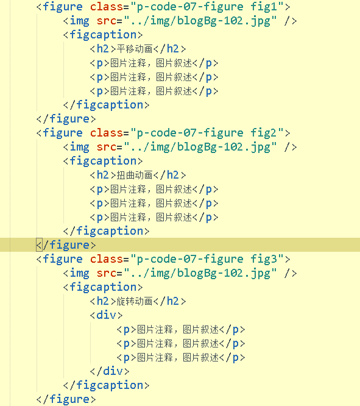

平移动画
图片注释，图片叙述
图片注释，图片叙述
图片注释，图片叙述
旋转动画
图片注释，图片叙述
图片注释，图片叙述
图片注释，图片叙述

缩放动画
图片注释，图片叙述
图片注释，图片叙述
图片注释，图片叙述
源代码：
html:
CSS:
.p-code-07-figure{
display: inline-block;
position: relative;
height: 180px;
overflow: hidden;
margin: 10px 2px;
cursor: pointer;
}
.p-code-07-figure img{
width: 260px ;
height: 180px;
}
.p-code-07-figure figcaption{
position: absolute;
top: 0;
left: 0;
width: 100%;
height: 100%;
color: #FFF;
padding: 8px;
box-sizing: border-box;
}
.p-code-07-figure:hover{
transform: translate(0,-7px);
transition: all .4s;
box-shadow: 5px 5px 4px #666666;
}
/*返回时也有效果,需要在hover元素上也加入transition*/
.p-code-07-figure{transition: all .4s;}
/*fig1---平移动画*/
.fig1 figcaption p{
transform:translate(-150px,0);
transition: all 0.35s;
}
.fig1:hover figcaption p{
transform: translate(0,0);
}
.fig1 figcaption p:nth-of-type(1){
transition: all .1s;
}
.fig1 figcaption p:nth-of-type(2){
transition: all .2s;
}
.fig1 figcaption p:nth-of-type(3){
transition: all .3s;
}
/*fig2---扭曲动画*/
.fig2 figcaption p{
transform: skew(90deg);
transition: all .3s ease .1s;
}
.fig2:hover figcaption p{
transform: skew(0deg);
}
.fig2 figcaption p:nth-of-type(1){
transition: all .1s;
}
.fig2 figcaption p:nth-of-type(2){
transition: all .2s;
}
.fig2 figcaption p:nth-of-type(3){
transition: all .3s;
}
/*fig3---旋转动画*/
.fig3 figcaption div{
width: 80%;
height: 80%;
border: 2px solid #FFF;
margin-left: 10%;
transform: translate(0,-200px) rotate(0deg);
transition: all .3s;
}
.fig3 figcaption div p{
opacity: 0;
padding:3px;
}
.fig3:hover figcaption div{
transform: translate(0,0) rotate(360deg);
}
.fig3:hover figcaption div p{
opacity: 1;
}
.fig3 figcaption div p:nth-of-type(1){
transition: all .1s;
}
.fig3 figcaption div p:nth-of-type(2){
transition: all .2s;
}
.fig3 figcaption div p:nth-of-type(3){
transition: all .3s;
}
/*fig4---缩放动画*/
.fig4 figcaption div{
width: 80%;
height: 80%;
border: 2px solid #FFF;
margin-left: 10%;
transform:scale(1.2,1.2);
opacity: 0;
}
.fig4:hover figcaption div{
width: 80%;
height: 80%;
border: 2px solid #FFF;
margin-left: 10%;
transform:scale(1,1);
transition: all .35s;
opacity: 1;
}
.fig4:hover img{
transform:scale(1.2);
transition: all .35s;
animation-direction:alternate;
}
.fig4 img,figcaption div{
transition: all .35s;
}